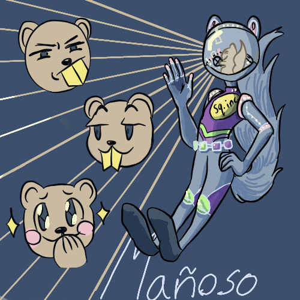

<section class="hero">
  <div>
    <span class="eyebrow">● My projects</span>
    <h1>Papá Robot</h1>
    
    <p>
      Some topics you'll see here
    </p>
    <ul class="hero-list">
      <li>Atari 8 bit</li>
      <li>Sinclair ZX Spectrum</li>
      <li>6502 programming</li>
      <li>Some devops rants</li>
    </ul>
  </div>

  <aside class="card" aria-label="Highlights">
    <p>Content.</p>
    <ul class="stats">
      <li><a href="Atari 3D graphics.html"><strong>01</strong>Atari 3D graphics</a></li>
      <li><a href="Zx Spectrum Bot.html"><strong>02</strong>ZX Spectrum Bot</a></li>
      <li><a href="The return of TACOBOT.html"><strong>03</strong>The Return of TACOBOT</a></li>
      <li><a href="Tacobot Online.html"><strong>04</strong>Tacobot Online</a></li>
      <li><a href="Bataroo.html"><strong>05</strong>Bataroo</a></li>
      <li><a href="Atari8bit bot mastodon.html"><strong>06</strong>Atari8bit Bot Mastodon</a></li>
      <li><a href="Fujinet server.html"><strong>07</strong>Fujinet server</a></li>
      <li><a href="December Adventure.html"><strong>08</strong>December Adventure</a></li>
      <li><a href="Raspberry pi 5.html"><strong>09</strong>Graphics in Raspberry Pi 5</a></li>
      <li><a href="OpenGL.html"><strong>10</strong>OpenGL</a></li>
      <li><a href="Jumpy Dino.html"><strong>11</strong>Jumpy Dino</a></li>
      <li><a href="more_3d_graphics.html"><strong>12</strong>More 3D graphics</a></li>
    </ul>
  </aside>
</section>

<section class="card podcast" aria-label="Atari Podcast">
  <div>
    <span class="eyebrow">● Podcast</span>
    <h2>ANTIC: the atari 8 bit podcast</h2>
    <p>
      I got mentioned in ANTIC: the Atari 8 bit podcast!
    </p>
  </div>
  <iframe title="Libsyn Player" style="border: none"
    src="//html5-player.libsyn.com/embed/episode/id/25992369/height/90/theme/custom/thumbnail/yes/direction/forward/render-playlist/no/custom-color/000000/"
    height="90" width="100%" scrolling="no" allowfullscreen webkitallowfullscreen mozallowfullscreen oallowfullscreen
    msallowfullscreen></iframe>
</section>

<section class="card" aria-label="About">
  <div>
    <span class="eyebrow">● About</span>
    <h2>Follow me at </h2>
    <p>
    <ul>
      <li><a href="https://mastodon.social/@paparobot" target="_blank">Mastodon</a>.</li>
      <li><a href="https://www.threads.com/@papa_robot" target="_blank">Threads</a>.</li>
      <li><a href="https://bsky.app/profile/papa-robot.bsky.social" target="_blank">Bluesky</a>.</li>
    </ul>
    </p>
  </div>

  <footer>© 2026 Papá Robot</footer>